在营地打理行装
用摇杆移动，靠近营地人物可以对话。出门前检查药品和当前武学，底部技能槽和背包入口都留在探索界面。

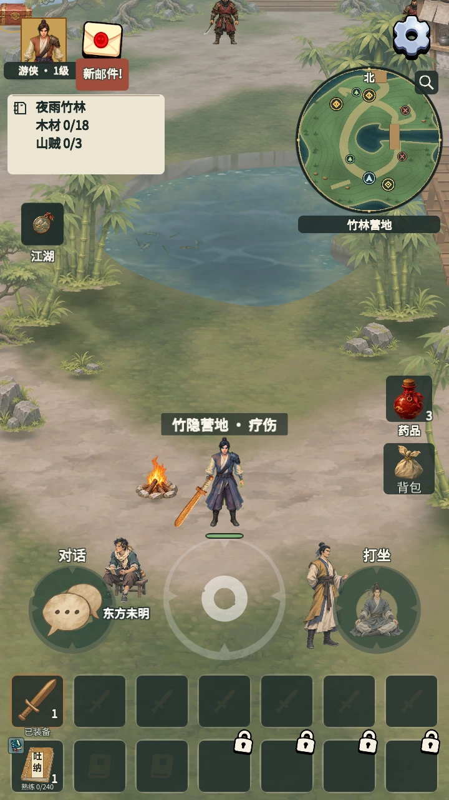
AI 游戏作品 / 竖屏武侠 RPG
从竹林营地整备武学，找灵木、寻装备，再进入十四关首领连战。读预警、绕地形、打断冲锋，逐关打开新的成长与战斗选择。序章也能提灯穿过夜雨竹道。
11 月 28 日的 Windows 0.4.30 已跑通夜雨序章、营地探索与十四关连战。营地、地图与成长截图来自这次 Windows 验收。
用摇杆移动，靠近营地人物可以对话。出门前检查药品和当前武学，底部技能槽和背包入口都留在探索界面。

打开江湖地图，辨认精英、普通敌人和灵木。灵木点标出攻击、气血或身法，选定点位可标记导航，再沿着营地道路选择探索方向。
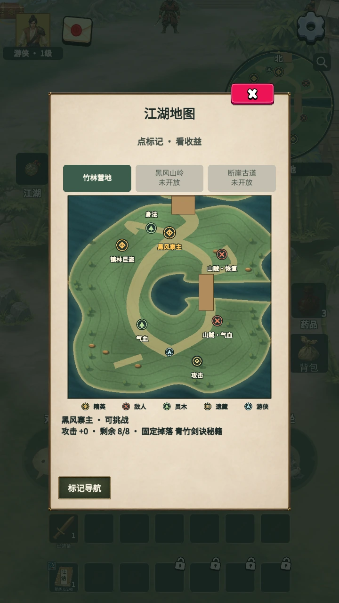
背包按装备、秘籍和物资组织道具。选中某件物品查看详情，关闭后焦点回到原物品。底部可以切换装备、武功和心法，接着调整本次出门的配装。
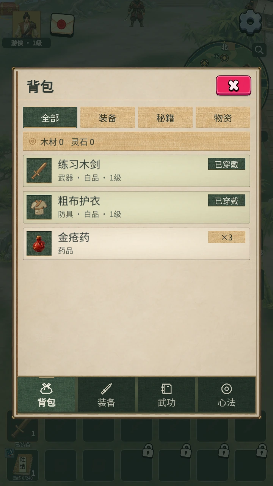
江湖菜单把竹林挑战、日常、成长和制作入口放在一起。查看开放条件后，玩家可以在营地准备，也可以从挑战入口继续推进。
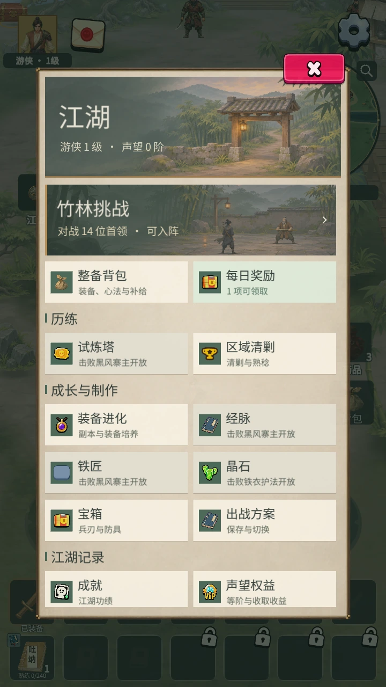
先随行灯的暖光辨认道路。主角左右换向时，灯仍挂在腰间的固定位置，走路和停步都用同一套脚步节奏。
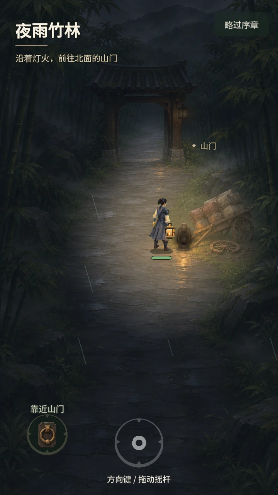
急转时只显示当前动作轮廓。挨打会有短促的后仰，仍能继续移动。敌方残血保留可见红线，气血归零后才收起血条。
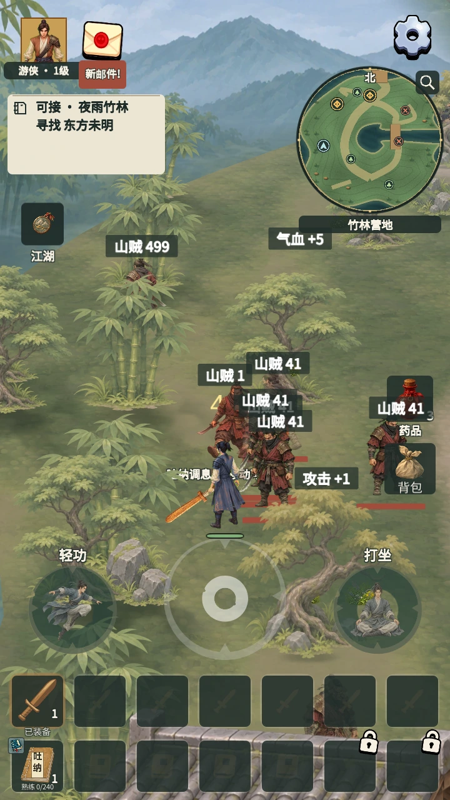
打开设置会暂停战斗，声音、画面与反馈按组排列，可直接点选画质和帧率。键盘与手柄焦点在弹窗内操作，关闭后回到打开它的控件。
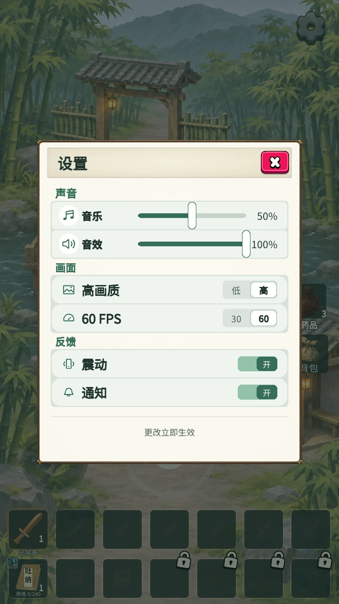
营地承担整备和败退后的恢复，竹阵用连续的首领战考验武学搭配。在后段关卡，熟悉的红区规则会与地形、投射物和援兵组合。
镖客以淡金色提示无伤侧步，随后用交错索线切断路线。低气血时，最后一段调整落点，玩家要读完整的出招次序。
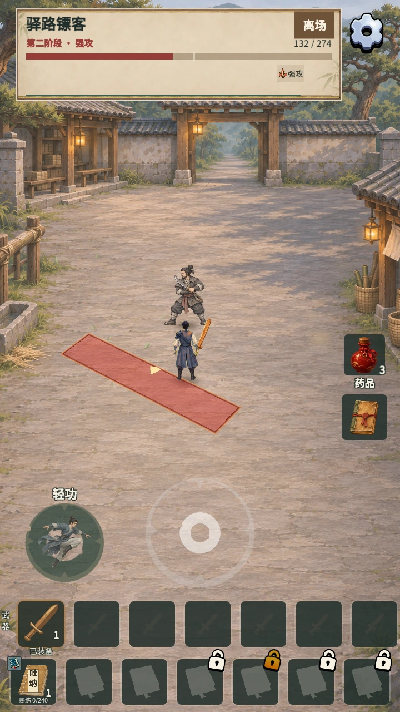
石碑挡住刀客的直冲和部分投射物，攻击预警也扣掉被遮挡的区域。截停后出现反击窗口，绕碑与贴身各有机会。
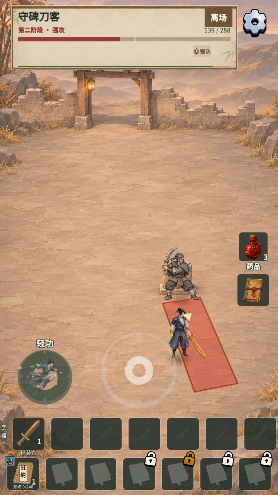
陶壶按落点结算，水弹和飞刃沿实际弹道预警，遇到护栏或石碑会截断。玩家可以先离开预警路径，再根据飞行速度决定何时切回攻击线。
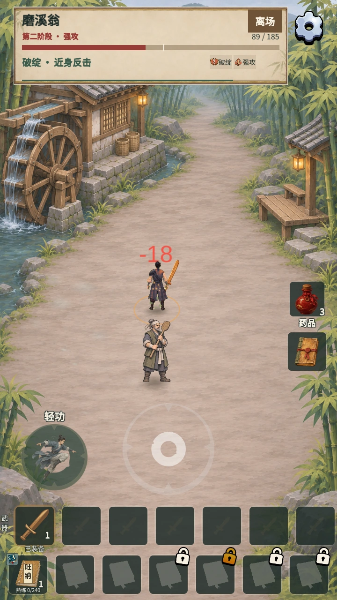
墨印提示援兵将入场，同场至多两名。玩家可转火近卫或游兵，击倒正蓄力的远程援兵会立即撤掉它的预警。首领倒下或转关后，场地会清除遗留的援兵与投射物。
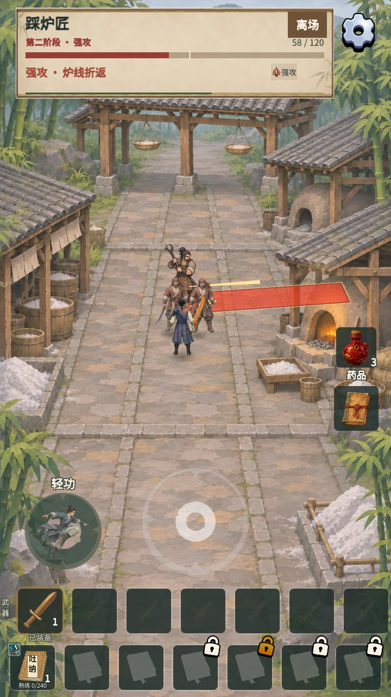